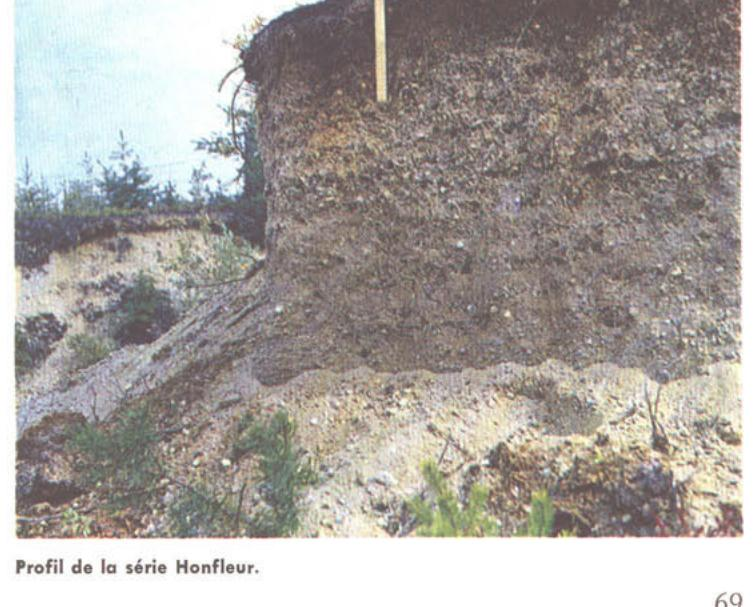

Identification & Caractéristiques Générales
La série Honfleur regroupe des sols développés sur des dépôts fluvioglaciaires ou deltaïques grossiers, caractérisés par un substratum de sables et de graviers dont l'épaisseur varie généralement de 1,2 à 2,4 mètres, reposant sur des argiles lacustres ou marines sous-jacentes. Les sédiments superficiels se composent de sables graveleux, de sables limono-graveleux ou de loams sablo-graveleux, souvent surmontés par une couche limoneuse d'épaisseur variable résultant d'une sédimentation deltaïque ou d'une redistribution éolienne et limoneuse locale. La répartition géographique de ces dépôts est associée aux anciens deltas fluviatiles et au pourtour des bassins lacustres situés en piémont du bouclier canadien. La topographie caractéristique varie de légèrement ondulée à subhorizontale, influençant directement les conditions de ruissellement et d'infiltration.
Le profil pédologique présente un drainage naturel généralement bon à excessif, dicté par une perméabilité élevée inhérente à la nature grossière des matériaux sous-jacents. La texture de surface varie du sable graveleux au loam sablo-graveleux, conférant au sol une pierrosité variable et une faible capacité de rétention en eau et en éléments nutritifs. La battance et l'érosion éolienne ou hydrique peuvent affecter la couche limoneuse superficielle lorsque celle-ci est mise à nu. La réaction du sol est généralement acide et nécessite un suivi analytique régulier pour maintenir des conditions chimiques optimales pour la croissance végétale, la végétation naturelle étant typiquement composée de peuplements de trembles, de bouleaux, de saules et de coudriers.
Les aptitudes agronomiques de la série Honfleur sont limitées par sa faible réserve utile en eau et sa pauvreté naturelle en éléments fertilisants, ce qui rend son aménagement onéreux pour les cultures intensives. L'exploitation agricole requiert une régie stricte visant à préserver la couche limoneuse de surface, ce qui proscrit le labour profond ou de défoncement susceptible d'enfouir les horizons supérieurs texturés au profit du sous-sol graveleux stérile. Les interventions agronomiques doivent intégrer des apports réguliers de matière organique, un chaulage correctif et une fertilisation minérale fractionnée. En raison de ses contraintes physiques et hydriques prononcées, une proportion significative de ces sols demeure sous couvert forestier ou est confinée à des usages agricoles restreints.
Caractères Distinctifs & Morphologie Génétique (Comté de Chicoutimi — Page 46)
- Topographie : horizontale à légèrement ondulée
- Drainage : bon
- Grand-groupe génétique : podzol
- Degré d'érosion : susceptible à l'érosion éolienne modérée (D2)
- Classe d'utilisation : 4
- Association géographique : séries Lapointe, Valin, Bourget, Grignon
- Végétation naturelle : épinettes, sapins, trembles, bouleaux, bleuets, comtonie, etc.
Classification Taxonomique & Environnement Pédologique
| Ordre Pédologique | Podzolique |
|---|---|
| Grand Groupe (SCSS) | Podzol humo-ferrique |
| Sous-Groupe Taxonomique | Podzol humo-ferrique orthique |
| Famille Pédologique | Squelettique-sableuse, mixte sableux, acide |
| Mode de Dépôt Parental | Fluviatile |
| Classe de Drainage Naturel | Bien drainé |
| Régime Thermique & Humidité | Frais / Subhumide |
Description Morphologique du Profil Type
Séquences génétiques des horizons pédologiques caractérisant le profil type représentatif de la série Honfleur :
Profil forestier / boisé — Comté de Chicoutimi
✓ Source : Comté de Chicoutimi — Page 47Couleur Munsell : Non précisée
Structure & Consistance : Polyédrique à granulaire
Description morphologique : Matière organique relativement décomposée; mousses, lichens et débris végétaux; pH: 5.2.
Couleur Munsell : 10YR 7/1
Structure & Consistance : Polyédrique à granulaire
Description morphologique : Loam sableux gris clair (10YR 7/1 - 7/2); horizon irrégulier, parfois absent.
Couleur Munsell : 2.5YR 3/4
Structure & Consistance : Polyédrique à granulaire
Description morphologique : Loam sableux brun rouge foncé (2.5YR 3/4); horizon irrégulier, mince et/ou en poche.
Couleur Munsell : 10YR 5/6
Structure & Consistance : Polyédrique à granulaire
Description morphologique : Loam sableux rouge jaune (10YR 5/6); présence de gravois dans l'horizon; pH: 6.1.
Couleur Munsell : 10YR 6/8
Structure & Consistance : Polyédrique à granulaire
Description morphologique : Loam sableux jaune brun (10YR 6/8) parsemé de gravois; pH: 6.2.
Couleur Munsell : 10YR 6/6
Structure & Consistance : Polyédrique à granulaire
Description morphologique : Sable loameux jaune (10YR 6/6) avec présence de gravois; pH: 6.2.
Couleur Munsell : 10YR 7/6
Structure & Consistance : Polyédrique à granulaire
Description morphologique : Sable graveleux jaune (10YR 7/6); pH: 6.2.
Couleur Munsell : 10YR 7/1
Structure & Consistance : Polyédrique à granulaire
Description morphologique : Sable graveleux gris clair (10YR 7/1); lits de petites roches alternant avec des lits plus épais de sables compacts; parfois il y a un peu d'altération au niveau supérieur des lits graveleux; pH: 6.3.
Profil représentatif — Pédologie de la région du Lac-Sa
✓ Source : Pédologie de la région du Lac-Sa — Page 68Couleur Munsell : Non précisée
Structure & Consistance : Polyédrique à granulaire
Description morphologique : Matière organique noir grisâtre; pH: 4.0.
Couleur Munsell : 7.5YR 7/2
Structure & Consistance : Polyédrique à granulaire
Description morphologique : Sable gris-rose (7.5YR 7/2).
Couleur Munsell : 5YR 3/4
Structure & Consistance : Polyédrique à granulaire
Description morphologique : Sable loameux brun-rouge foncé (5YR 3/4); assez friable; pH: 5.2.
Couleur Munsell : 10YR 6/8
Structure & Consistance : Polyédrique à granulaire
Description morphologique : Sable grossier (graveleux) jaune-brun (10YR 6/8); se durcissant; pH: 5.6.
Couleur Munsell : 10YR 7/6, 10YR 6/6
Structure & Consistance : Polyédrique à granulaire
Description morphologique : Sable graveleux ou gravier sableux jaune (10YR 7/6); se durcit en ortstein avec taches jaune-brun (10YR 6/6); pH: 5.6.
Couleur Munsell : 10YR 8/2
Structure & Consistance : Polyédrique à granulaire
Description morphologique : Gravier et gros sable blanc-rose à brun très pâle (10YR 8/2 à 8/3); stratification de gros sable et de gravier; pH: 5.5.
Profil représentatif — Pédologie de la région du Lac-Sa
✓ Source : Pédologie de la région du Lac-Sa — Page 69Couleur Munsell : Non précisée
Structure & Consistance : Polyédrique à granulaire
Description morphologique : Matière organique mélangée à peu de sable; pH: 5.4.
Couleur Munsell : 7.5YR 7/2
Structure & Consistance : Polyédrique à granulaire
Description morphologique : Sable loameux gris-rose (7.5YR 7/2).
Couleur Munsell : 5YR 4/8
Structure & Consistance : Grumeleuse faible
Description morphologique : Loam sableux rouge-jaune (5YR 4/8); présence de gravier; structure grumeleuse faible; très friable; pH: 5.7.
Couleur Munsell : 7.5YR 5/8, 10YR 5/6
Structure & Consistance : Polyédrique à granulaire
Description morphologique : Loam sablo-graveleux brun vif (7.5YR 5/8); légèrement tassé, souvent induré, abondance de cailloux de 1 à 2 pouces de diamètre et de couleur brun-jaune (10YR 5/6); pH: 5.3.
Couleur Munsell : 10YR 5/6
Structure & Consistance : Polyédrique à granulaire
Description morphologique : Gravier sablo-caillouteux brun-jaune (10YR 5/6); pH: 5.3.
Couleur Munsell : 10YR 6/3
Structure & Consistance : Polyédrique à granulaire
Description morphologique : Gravier sablo-caillouteux brun pâle à gris (10YR 6/3 - 6/1); pH: 5.5.
Profils Photographiques & Planches de Terrain
Documents iconographiques, figures pédologiques et coupes de terrain documentées dans les mémoires d'inventaire pour de la série Honfleur :

Propriétés Physico-Chimiques & Analyses de Laboratoire
| Horizon | Prof. (pces/cm) | Sable % | Limon % | Argile % | pH | C % | N % | Ca éch. | Mg éch. | K éch. | H+ éch. | Bases tot. | C.E.C. (meq/100g) | Saturation % |
|---|---|---|---|---|---|---|---|---|---|---|---|---|---|---|
| O+Ap | 2-4/5-10 | — | — | — | 5.2 | 3.09 | 0.31 | 3.2 | 0.8 | 0.26 | 17.37 | 4.26 | 21.63 | 19.7 |
| Bf1+f2 | 7-8/17.8-20.3 | 82.4 | 14.0 | 3.6 | 6.1 | 1.31 | 0.05 | 0.4 | 0.2 | 0.05 | 5.18 | 0.65 | 5.83 | 11.1 |
| Bf3 | 5-6/12.5-15 | 94.4 | 5.0 | 0.6 | 6.2 | 0.28 | 0.01 | 0.4 | 0.2 | 0.05 | 1.92 | 0.65 | 2.57 | 25.3 |
| C1 | 12-14/30-35.5 | 94.6 | 2.8 | 1.6 | 6.2 | 0.17 | 0.01 | 0.3 | 0.2 | 0.05 | 1.05 | 0.55 | 1.60 | 34.3 |
| C2 | — | 97.0 | 2.2 | 0.8 | 6.3 | 0.28 | 0.01 | 0.3 | 0.2 | 0.03 | 0.38 | 0.53 | 0.91 | 58.2 |
Particularités Régionales, Phases & Variantes Pédologiques
Déclinaisons régionales, faciès texturaux, phases d'érosion ou de pierrosité et variantes cartographiées par étude pour de la série Honfleur :
| Étude Régionale | Symbole | Appellation / Phase / Variante | Différenciation avec la série type (Analyse pédologique) |
|---|---|---|---|
| Comté de Chicoutimi | Ho |
Honfleur sable graveleux | Modalité modale de référence (type de base de la série). |
Hol |
Honfleur loam sableux graveleux | Faciès textural de surface loam sableux (distinct du sable de référence). | |
| Pédologie de la région du Lac-Saint-Jean | Ho |
Honfleur sable graveleux | Conforme à la série type de référence (caractéristiques texturales et drainage identiques). |
Hol |
Honfleur loam sableux graveleux | Faciès textural de surface loam sableux (distinct du sable de référence). |
Distribution Pédo-Paysagère & Représentativité Cartographique (Couverture PPS 2026)
- Alluvion non différenciée à surface sableuse (ALL) — co-occurrente dans 143 polygone(s)
- Affleurements rocheux (ARR) — co-occurrente dans 118 polygone(s)
- L'Ascension sable grossier (LSC) — co-occurrente dans 79 polygone(s)
Aptitudes Agronomiques, Hydropédologie & Conservation des Sols
Indicateurs Hydropédologiques & Vulnérabilité à l'Érosion (BDHP 2026)
Interprétation BDHP : Potentiel de ruissellement faible. Sols à infiltration rapide (sables profonds, graviers bien drainés).
Classement selon l'Inventaire des Terres du Canada (ITC / CLI) : Classe 3m.
- Potentiel agricole : Terroir adapté aux cultures régionales selon la texture dominante et la régie de drainage.
- Contraintes majeures : Bien drainé. Risque d'engorgement temporaire ou d'excès d'eau printanier.
- Gestion & Aménagement : Drainage souterrain ou superficiel préconisé sur les terres planes. Chaulage et apport organique régulier selon les bilans agronomiques.
- Cultures adaptées : Grandes cultures (maïs, soya, céréales), prairies fourragères et cultures maraîchères selon le contexte géomorphologique.